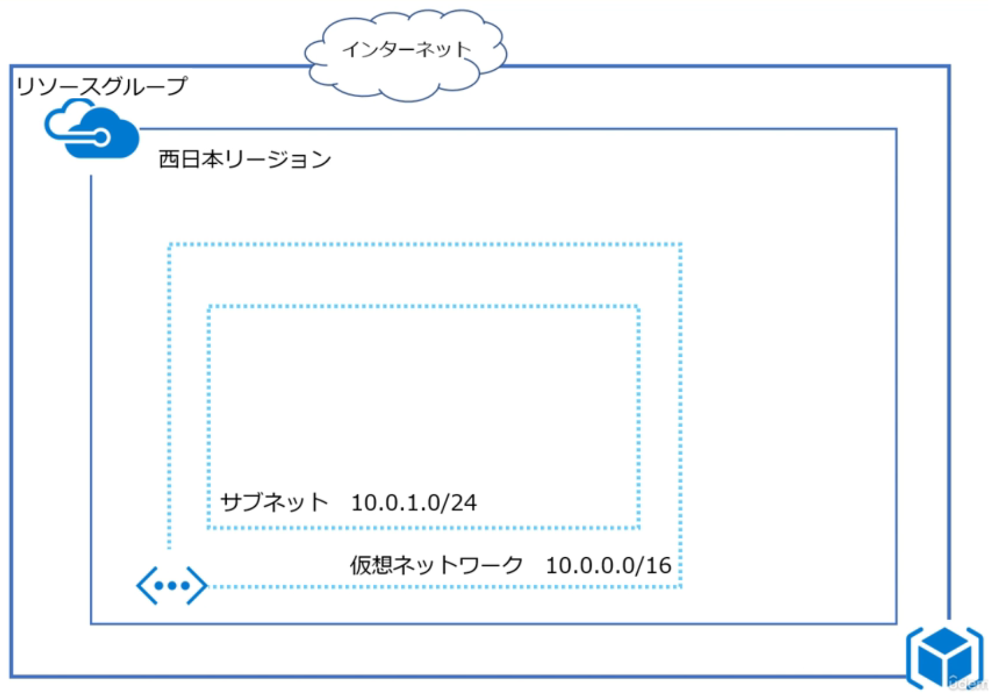
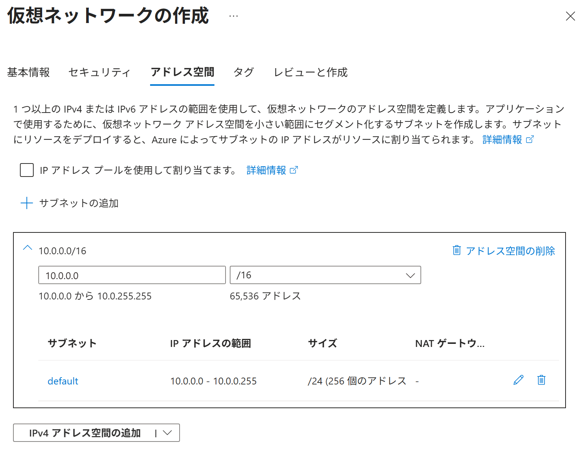
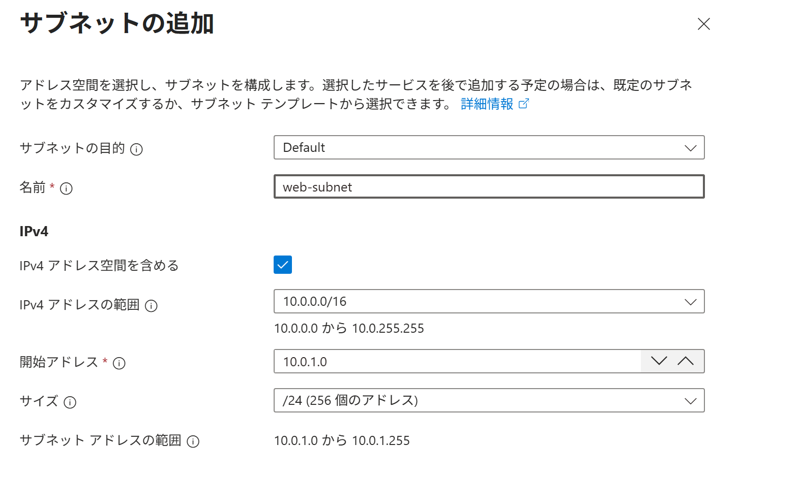
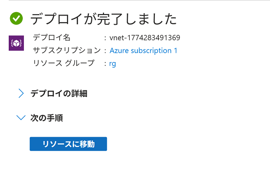

Azure ポータル で 仮想ネットワークを作成する
適用対象: ✔️ 仮想ネットワーク
この演習では、Azure ポータル を使用して仮想ネットワークとサブネットを作成します。
所要時間: 約 10 分
先行の演習
この演習を始める前に リソースグループを作成する を完了してください。
タスク 1: 仮想ネットワーク/サブネットの作成
仮想ネットワークとサブネットを作成します。


- ポータルメニューから [仮想ネットワーク] を選択します。
- [＋ 作成] を選択します。
- 使用する [サブスクリプション] を選択します。
- リソース グループで
msaz-rgを選択します。 - 仮想ネットワーク名に
msaz-vnetと入力します。 - 利用可能な [リージョン] を選択します。
- [次へ] を選択します。
- セキュリティ タブで、設定項目を一通り確認します。設定値はデフォルトのままにします。
- [次へ] を選択します。
- アドレス空間 タブでは、仮想ネットワークの IPアドレス空間を構成します。
[🗑️ アドレス空間の削除] を選択します。
- [IPv4 アドレス空間の追加] を選択します。
10.0.0.0/16のアドレス空間が追加されたことを確認します。- [＋ サブネットの追加] を選択します。
- 以下の設定値を入力または確認します。指定のない項目はデフォルトのままにします。

分類 設定 値 サブネットの目的 [Default] 名前 web-subnetIPv4 IPv4 アドレス空間を含める [☑️] IPv4 アドレスの範囲 10.0.0.0/16開始アドレス 10.0.1.0サイズ [/24 (256個のアドレス)] プライベート サブネット プライベート サブネットを有効にする (既定の送信アクセスなし) [☑️] セキュリティ NAT ゲートウェイ [なし] ネットワーク セキュリティ グループ [なし] ルート テーブル [なし] - [追加] を選択します。
- [レビューと作成] を選択します。
- 内容を一通り確認し、[作成] を選択します。
- 完了を待ちます。

タスク 2: 作成されたリソースの確認
仮想ネットワークとサブネットが作成されていることを確認します。
- ポータルメニューから [仮想ネットワーク] を選択します。
msaz-vnetが作成されていることを確認します。msaz-vnetを選択します。- サービスメニューから 設定 ＞ [サブネット] を選択します。
web-subnetが作成されていることを確認します。